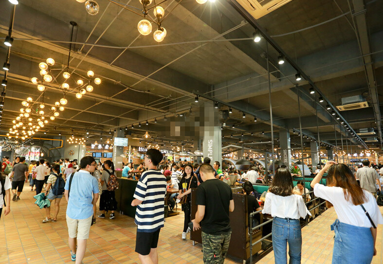
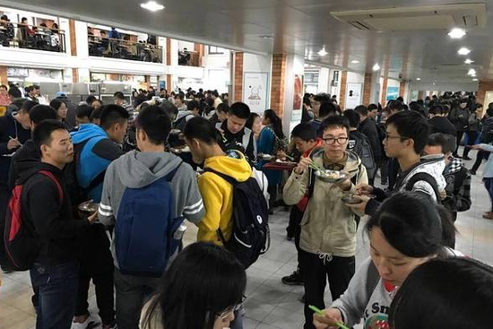

思路来源


很多人对这种场景并不陌生，这种画面每天都会出现在我们的生活里，中午下午下课后，食堂的窗口被围得得水泄不通，这使得很多人都放弃了在食堂吃饭而去点外卖，这也是我想创这个业的原因。
其次就是很多人担心的安全问题了，新闻经常报道哪里的外卖又出现安全问题，这弄得人心惶惶的，但由于实在没有时间，一些学生或者职工只好冒着危险点外卖。我就在想弄一个食堂外卖或许
可以解决这个问题，让职工与学生不用跑老远就能吃到食堂的卫生且便宜的饭了。
在结合学校实际情况以及我的个人情况后，我决定要让食堂外卖在各个学校流行起来